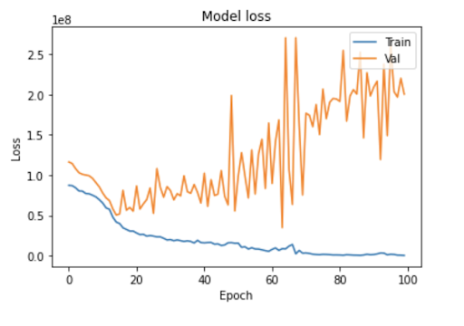
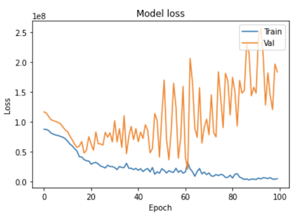
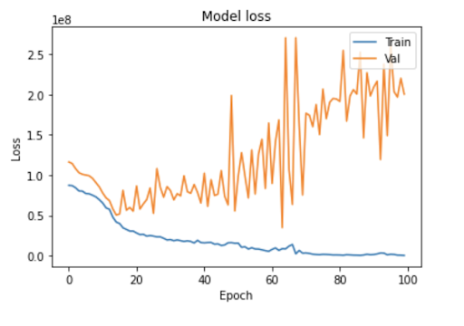
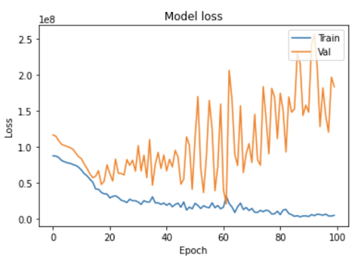
Predicting COVID-19 Spread Based on Country’s Metrics
Country Dataset: Each datapoint is a country with about 50 features, including GDP, Population Density, Urban Population, etc.
COVID-19 Dataset: Each row has a country and date, along with Covid statistics for that country/date. These statistics include new cases, deaths, and tests
We will combine datasets based on the country key. We will also combine multiple rows of the Kaggle dataset to generate a dataset that records total cases per country over time (every 2 weeks). The ground truth is the true number of reported COVID cases per country.

We are trying to understand how effective the different characteristics of countries around the world (e.g.total population, population density, GDP) affect the rate at which COVID-19 spreads around the corresponding country. Some models rely on user’s inputs such as local population, current status of infection, while others focus more on data reported by the World Health Organization and their government. In addition, there seems to be a lack of information around the handling of coronavirus. It is easy to say a certain place’s government handled coronavirus well because the cases are low, and another’s handled it poorly due to the high rate of infection. However, this approach lacks context, failing to take into account the differences in countries.
We are analyzing unique combinations of features of countries to approach this problem. We will also try multiple machine learning approaches and see what is most effective. We think this will be successful because we can be flexible in our model choice and the country features we choose to analyze. Potential supervised methods we want to test out include linear regression, LDA, and decision trees. There are concerns about the accuracy of data regarding the spread of COVID, with certain countries underreporting or undertesting, which could have implications on the data of our model. Therefore, if we are not clear about the potential limitations of our model, we run the risk of spreading misinformation. We will be using free libraries and methods to perform our analysis. So, it will not cost anything. Depending on the method we use to analyze, the time will vary. For unsupervised methods, we will use GMM to cluster the data and look for relationships between the countries. From this clustering, we plan on learning if clustered countries have a similar Covid-19 spread.
For pre-processing we will remove several features. Some features contain information already encoded in other features. For example, we have information on population, surface area, and population density. We can remove population density in this situation, as it is population/surface area. There are also variables we think will likely be irrelevant to our findings, such as forested area or number of endangered species, which we plan to remove. Lastly, our data is entirely numerical except for the region in which a country resides (e.g. southern asia) which we will represent using one-hot encoding.
We will use half the dataset to train the model, and then check for accuracy against the other half of the dataset on past data. We can also predict the future rate of COVID-19 spread and wait until the predicted date to compare the actual spread against our predicted value. Our goal is to be within 10% of the true value. For example, we can predict total COVID-19 cases for a certain country 1 week into the future, and then see what the true value is once that time comes.
We are trying to provide unbiased prediction of COVID-19 spread by using various parameters for a better understanding of how each country operates and to combat spread of COVID-19 based on the predicted trajectory.
The goal for this touchpoint was to clean and pre-process our data, as well as perform unsupervised learning algorithms.
Our country dataset had many features, some of which were extraneous. In order to focus on relevant features, we removed the following columns:
Next, we had to deal with misformatted and missing data.
There were a few types of misformatted data in our initial country dataset. Each country had a region feature (ex: CentralAmerica or NorthernAfrica). To represent these features numerically instead of as a string, we one-hot encoded each country's region. We split each region name into an individual column, putting a 1 if the country was from that region (0 if not). The next type of misformatted data was columns with multiple data values separated by a "/". For example, "Pop. using improved drinking water (urban, rural %)" with a value like "45.1/27". We separated this type of data into two columns, delimiting at the "/".
Throughout the dataset, there were many types of missing data. Examples include "...", "-99", "". There also were cells with "~0", "-~0.0", and "-~0". We replaced all the approximately 0 values with 0. Then, we filled in all the missing data values by using the K-nearest neighbors algorithm. For our k-value, we decided on using the square root of the number of datapoints we had. At the end, we had a clean dataset with purely numerical values.
Now that we had a clean country features dataset, we now had to merge it with a dataset containing Covid-19 data for countries. Our Covid-19 dataset contained the number of cases in a country on every day starting from the beginning of the year. Because countries had different dates of first reported infection, we reduced the data down into number of Covid-19 cases 5 days, 25 days, and 50 days after first infection. Then, we added these 3 columns as features to our cleaned country dataset.
Our goal for unsupervised learning was to cluster our countries, both with and without the Covid-19 features added.
We performed the DBSCAN algorithm because we suspected there were strong outliers among the countries, for example the USA and China. Here is our results for performing DBSCAN on GDP and Population of countries.
 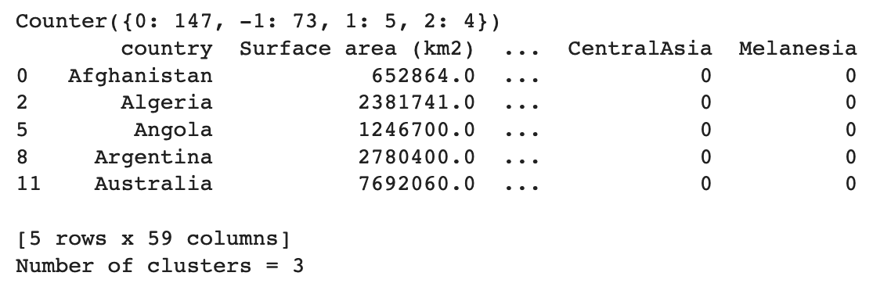
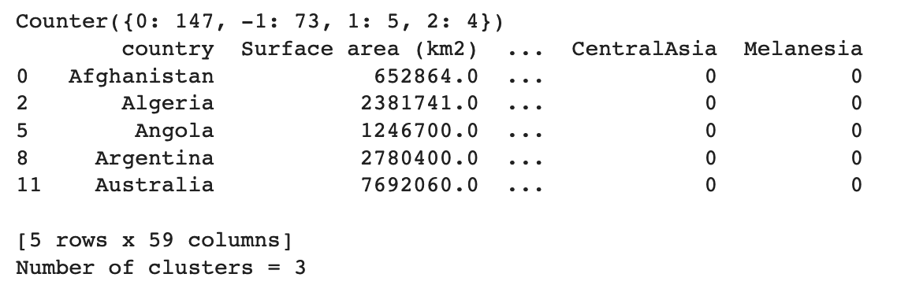
As seen in the images, most of the countries are similar in terms of population and GDP, however there are a few outliers like the USA and China that are far removed from the majority of the others because they have much higher GDP and population. These outliers represent countries with a large GDP and population. The yellow cluster includes Ghana, Mozambique, Nepal, and Yemen. The green cluster includes Hong Kong, Denmark, Ireland, Israel, and Singapore. The majority of other countries are in the purple cluster.
We also performed DBSCAN using the same eps parameter (0.04) and minValues parametr (4). This time, we taking into account all features of the countries along with the COVID cases. The results are below:
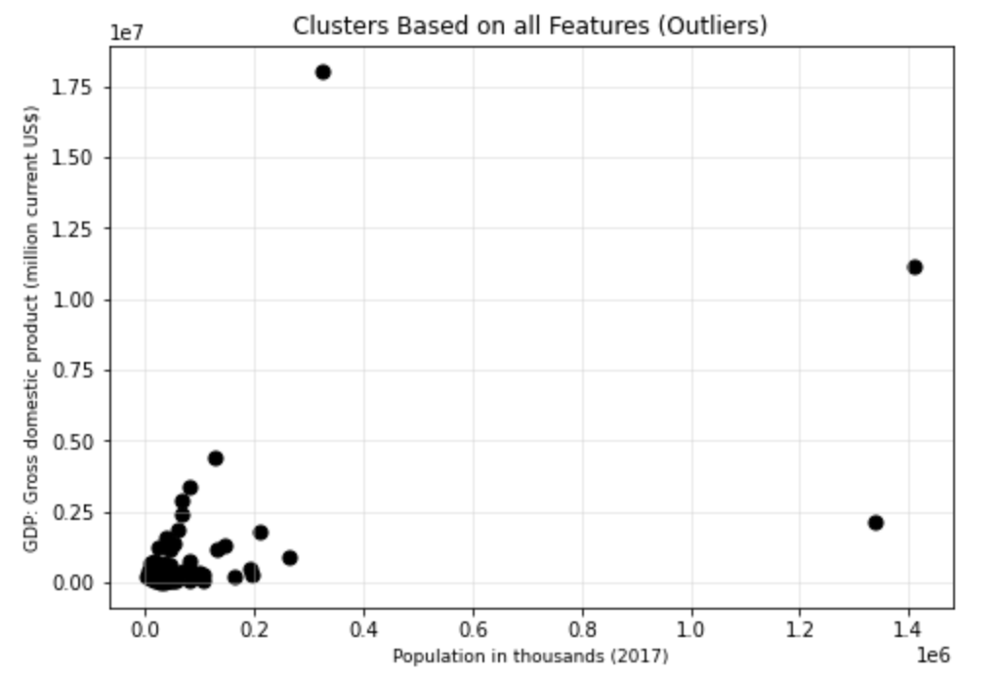 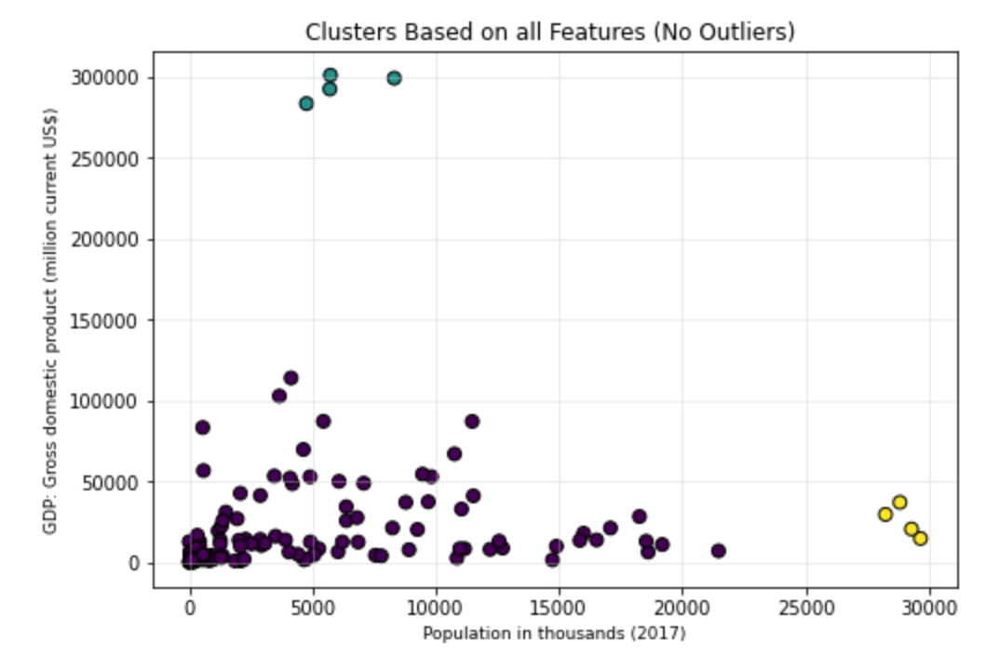 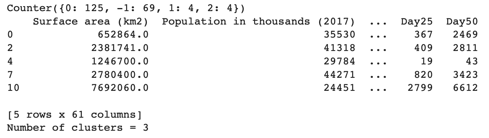The clusters are extremely similar, indicating that GDP/Population are good measures of similarity between countries. The green cluster lost one country (Hong Kong). Overall, there were also less outliers (69 compared to 73).
We performed the kmeans algorithm on the dataset without the number of covid cases and with the number of covid cases after 5 days, 25 days, and 50 days. The first image is the clustering without covid cases and the second picture is with covid cases.


We chose k-means clustering because it's a common clustering algorithm that we learned in class. We used the elbow method to determine the number of clusters, which is 9. For the clustering without covid cases, countries seems to be grouped in terms of either common region and/or gross domestic product. For cluster 0, countries such as Japan, South Korea, Singapore, New Zealand, Netherlands, Hong Kong, Canada, Australia, United States, etc. This seems to be clustering "First World" countries with higher values in GDP and trading rates. For cluster 1, countries such as Saint Lucia, Bahamas, Dominican Republican, Turks and Caicos Islands, United States Virgin Islands, etc. This cluster seems to be grouping island countries located in the Carribean Sea. The rest of the clusters are grouped in respective to their GDP or to the regions that are closest to each other. As for clustering with covid cases, there were 2 clusters that did not have any changes. One of the cluster consists of countries located in the Carribean Sea and the other cluster consists of European countries located near the Mediterranean Sea. For the rest of the clusters, there is a 4-12 differences between the results from kmeans without covid versus with covid. Countries seems to be clustered geographically closer to countries near them. For example, Afghanistan, Bangladesh, Cambodia, and Bhutan were in the same cluster without covid cases, but were then put into clusters to countries that were closer to them with covid cases. Argentina, Colombia, and Bolivia were in the same cluster as a handful of Southeast Asian countries without covid, but were grouped into clusters with South American countries with covid.
We then performed the GMM algorithm on the datasets with and without covid. The first step was to find how many components we should use to optimize our models. Shown below are two graphs displaying the AIC (Akaike information criterion) and BIC (Bayesian information criterion). AIC is suggesting that we choose 12 components to get the best results. However, BIC is minimized at 3 components. Since BIC is proposing a simpler model, that is what we went with.
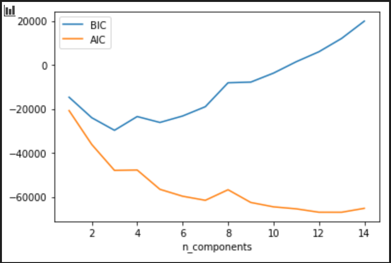 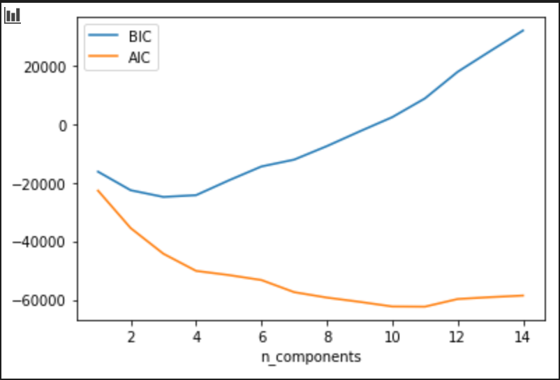Next, we had to create the models and analyze the clusters. Our results are shown below. Evaluating the dataset without covid, we can see the clusters are computed by having similar features like GDP, surface area, population, international trade, etc. Since only 3 clusters were made, the data does vary with the PCA, but overall produced promising results. Now, interpreting the dataset with covid, we see a similar output. However, it is interesting to note that cluster 0 and cluster 2 have been switched. While accounting for covid, many countries which are closer together were now being grouped together. The covid data changed the PCA, enhancing the clusters and providing an improved model.
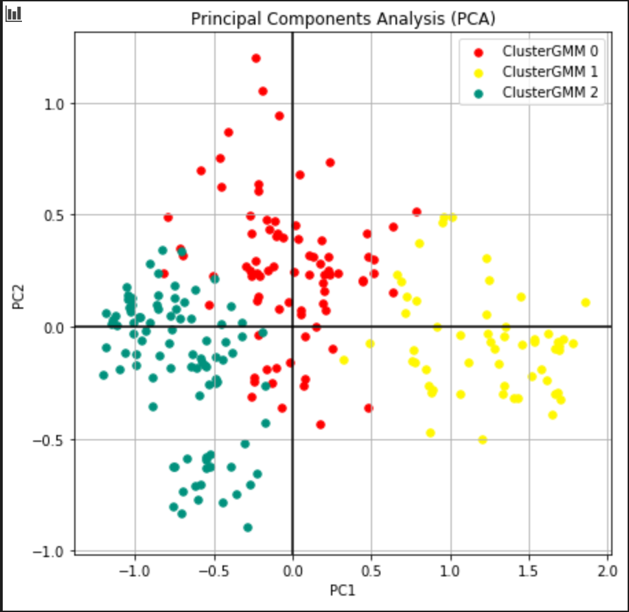 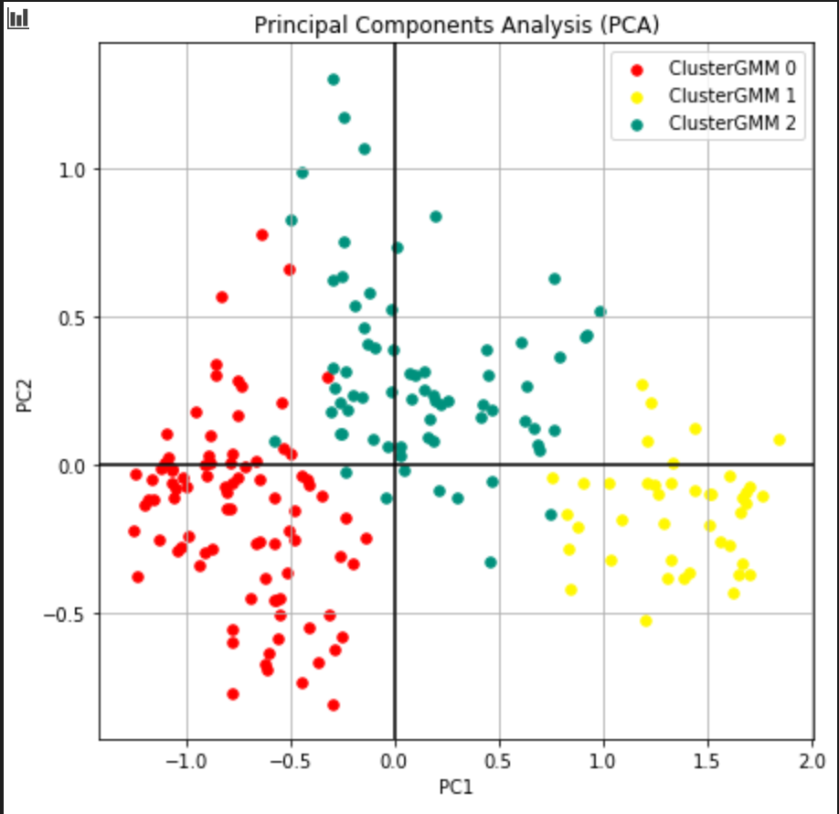We ran kmeans with 3 clusters and the countries in each cluster matches with the countries in each cluster from gmm, with a difference of 1-6 countries for each cluster. Kmeans is strictly based off distance of the clusters and gmm is based off of the gaussian distribution. Kmeans is a 'hard' assignment while gmm is a 'soft' assignment and because of this gmm is subjective to randomness, which affects the differences of 1-6 countries in each cluster.
We made histograms of the 5 highest variance features in our dataset to get a better understanding of the distribution of our data.
This was our highest variance feature. A little over half of countries have clean drinking water widely available in rural areas. However, the remainder of the countries are relatively evenly distributed between 0 to 80 percent of the population using improved drinking water. Access to sanitary water helps prevent disease in general, and making sure it is clean would prevent an avenue COVID-19 has for spreading. However, being rural, it's also possible that the impact may be lessened due to people being more distanced by nature. It will be interesting to see how well this serves as a predictor for how covid spreads in a country.This was our second highest variance feature. It follows a similar distribution to rural drinking water, although even more countries fall into the 80-100% bin. This makes sense, as countries with the infrastructures for clean rural drinking water are likely to have that in place in cities as well, and countries without the rural infrastructure may have it only in their cities. Lack of clean water in an urban environment is ikely even more of a problem than lack of clean water in a rural environment.
This was our third highest variance feature. Although more countries tend to have a low percentage of people under 14, there are still a little over 20 countries with between 42.5 and 50% and around 80 between 27.5 and 42.5. Countries with a larger amount of children may be at risk of COVID-19 spreading faster as children may be less careful and interact with many people through school or other activities. However, it is also another way to contextualize cases as children are often less at risk of serious danger when contracting COVID-19.

This was our fourth highest variance feature. Very few countries exhibited extremely low urban population percentages, with around 140 countries sitting between 40% and 100% urban. That number drops for the bins of countries with a smaller percent. Urban locations can be COVID-19 hotspots as they are more likely destinations for travelers, and have a large number of people in close proximity, aiding in the spread of the disease and increase of casen numbers.
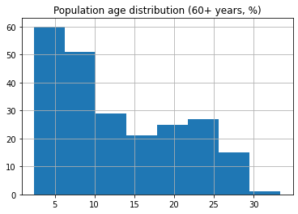This was our fifth highest variance feature. It follows similar distribution to the young age distribution. However, older people tend to be more at risk upon contracting COVID-19, and even places with lower case numbers may be more heavily affected if they have a larger elderly proportion
This was a feature we thought would be interesting to consider, as countries with a higher population density would probably have COVID-19 spread more rapidly. We found that the majority of countries had very similar population densities, and the majority of countries were also comparably sized, although there were a few countries with much higher population density (Monaco, Macao) as well as a few extremely large countries (Australia, Brazil, China, USA, Canada, Russia)
We also generated a Correlation Matrix to better understand how our features were related. The highly correlated variables (|r| > .5) were logical. For example male tertiary eduction rate and female tertiary education rate had an r = 0.925538 and countries with large populations tended to have larger total imports and exports (r = 0.605799 and r = 0.605799, respectively).
The correlation matrix is provided at the bottom. It has been moved so you don't need to scroll through it to access supervised learning results(warning: it is very large)
The goal for this touchpoint was to perform supervised learning algorithms on our cleaned data in order to predict the number of covid cases in a country x days after first infection. We randomly split our data into 80% training data and 20% test data. We also used the same training and test data across our different algorithms so that we could compare results.
One method we chose was neural networks because it is a supervised learning method that allows us to predict a final value based off of features. Furthermore, we learned about them in class so we had a good foundation to branch off of. We used a neural network with the features being the 58 different attributes of each country and the label being the number of covid cases after x number of days. We ran our model 3 separate times, where x varied between 5, 25, and 50.
For the architecture of our neural network, we chose the ReLU activation function because ReLU models generally perform well and avoid certain pitfalls like the vanishing gradient problem. We initially ran our model with 2 hidden layers and 32 nodes at each layer, but our results weren’t very informative. So, we upped the number of hidden layers and nodes for our data, but this led to overfitting. To compensate for this, we applied regularization techniques to arrive at our final model. Graphs and results for each of these steps are shown below.
We chose an optimization function of “adam” from keras, since it is widely used for regression in neural nets. We then chose mean squared error as our loss function because we were working with a regression model and not a classification one. We chose a linear activation for our output layer instead of other choices like sigmoid, since our regression problem required an unbounded function.
These are our results and analysis from creating a neural network model and running our training data through it. This analysis includes data from China.
Our prediction output was hundreds times the actual number of cases for day 5. For example, Guyana had 5 cases, but our neural net predicted that there should be 918 cases for that day. Sudan had 1 case, but our neural net predicted there should be 864. Mauritania had 1 case, but our model predicted there should be 607 cases. The prediction is heavily skewed and does not accurately reflect the total number of cases for day 5.
Our prediction was off for day 25 covid cases. While Guyana, Sudan, and Mauritania’s cases grew proportionally in both the predictions and the actual data since day 5, the United Kingdom had 15,025 cases on day 25, but our model predicted that it should be 1485.
Our prediction was more inaccurate compared to day 50 because cases were on the rise for day 50, but our prediction model seemed to predict half of the number of cases since day 25. For example, Guyana is predicted to have 535, Sudan was supposed to have 554, and Mauritania should have 503 cases.
Once we obtained these results, we re-evaluated our model to look for improvements. When looking back at our training data, we realized that one huge outlier was China. While most countries only had a few dozen covid cases at Day 5, China had over 80,000. We suspected that this huge number in China biased our model. Thus, we re-ran our model after removing China from our training set.
Our prediction was the most accurate for day 5 without China’s data as part of the training set. Guyana had 5 cases, but should have 21, Sudan had 1, but should have 3, the United Kingdom had 220, but should have 229, and Mauritania had 1, but should have -15. Overall, the prediction was pretty close to the actual cases of day 5.
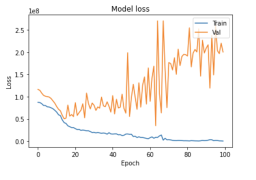
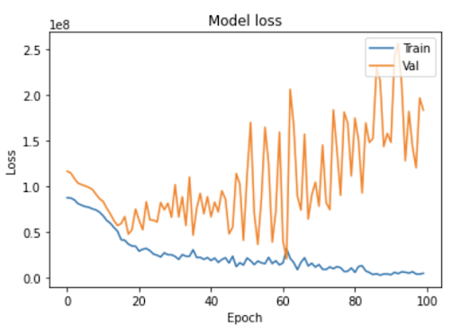
Our prediction for day 25 was inaccurate as the predicted number of cases were much greater than the actual number of cases. Guyana had 37, but should be 1171, Sudan had 12, but should have 594, and the United Kingdom had 15,025, but should have 5783.54. Some countries, such as France and Germany had covid cases in the range of 80,000, which could be the outlier that influenced our model’s prediction to skew the cases higher than the actual number of cases.
The prediction of cases for day 50 grew proportionally to the number of cases for day 25. For example, Guyana had 82, but should have 6420, Sugan had 442, but should have 3163, and the United Kingdom had 121,412, but should have 16,688. The prediction was still inaccurate, but that could be due to the outliers such as France, Germany, and Italy for our training set.
Overall, our neural network performed poorly (except for day 5’s prediction without China’s data) and this could be due to our poor training data. Our predictions for covid cases including China’s were the most inaccurate. The predicted number cases were in the hundreds and thousands, all relatively close to one another. However, the actual number of cases were not as uniformed. Some countries only had a handful, while others had thousands of cases. As for our data without China’s data, we suspected that since a handful of countries have outliers with cases in the range of 80,000-100,000, while most countries only hand a few thousands, this could be the reason why our neural network also performed poorly. Countries such as France, Germany, and Italy experienced a spike in covid cases, and as a result, countries that share similar characteristics to those countries were expected to have the same number of cases. The outliers also overpredicted for the rest of the countries, a similar trends that we saw when we included China’s data in our training sets.
due to the poor performance of our regression analysis, we attempted to resturcture our problem as a classification task
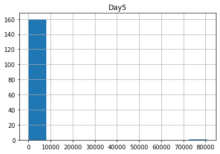Our original distribution of cases numbers was very heavily focused in one group, with a few outliers. This is due to cases being a total number, rather than proportional to the population
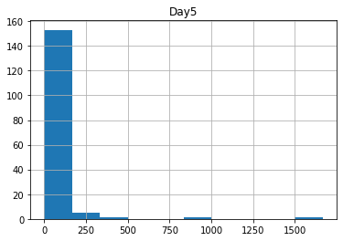When scaled to our population, we see a bigger spread, but still have a few outliers
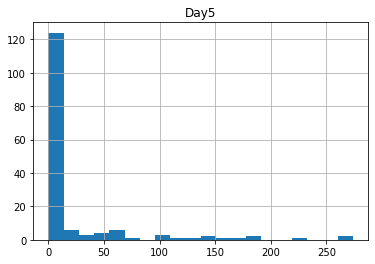Our distribution looks like the above when the outliers are removed. So we settled on the bins <=20, (20, 100], (100, 200], >200.
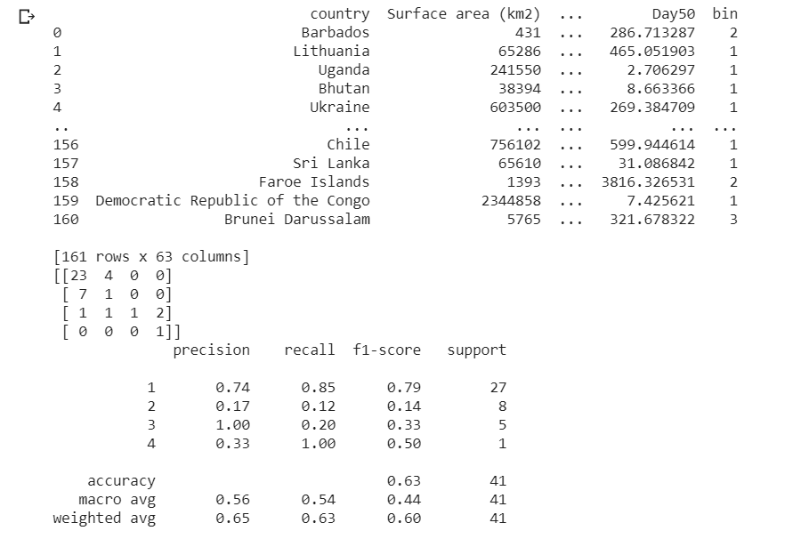The confusion matrix and classification report are above. Since we do not have a strong preference for precision or recall, we mainly looked at our F1 score. It has an accuracy of .63 overall, but the macro average is .4 and the weight average is .6. Overall, there are many countries in group 1, which we classified well, but it became much more difficult for other groups
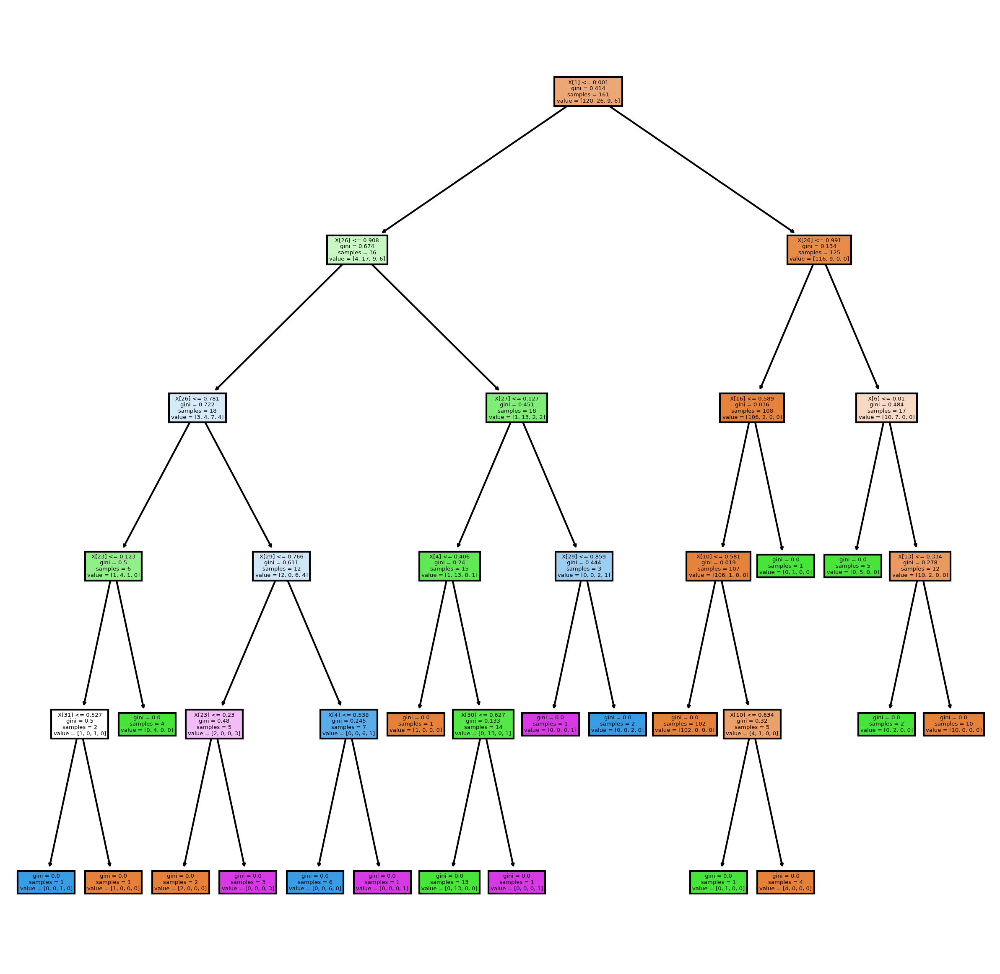The decision tree is pictured above. Clearly, one of the most informative features was the population size (x[1]) and the rural clean drinking water percentage (x[26]). Both of these make sense as they directly impact the spread of disease. Given the nature of our data, a lot of the information can be hard to collect, especially for less developed coutnries, where there is no infrastructure to gather those statistics. Even in countries with the resources to do so, testing for coronavirus may not be a social norm. This may help explain the difficulty our model had in properly predicting cases
| Surface area (km2) | Population in thousands (2017) | Population density (per km2, 2017) | GDP: Gross domestic product (million current US$) | GDP growth rate (annual %, const. 2005 prices) | GDP per capita (current US$) | Economy: Agriculture (% of GVA) | Economy: Industry (% of GVA) | Economy: Services and other activity (% of GVA) | Employment: Agriculture (% of employed) | Employment: Industry (% of employed) | Employment: Services (% of employed) | Unemployment (% of labour force) | Agricultural production index (2004-2006=100) | Food production index (2004-2006=100) | International trade: Exports (million US$) | International trade: Imports (million US$) | Population growth rate (average annual %) | Urban population (% of total population) | Urban population growth rate (average annual %) | Population age distribution (0-14, %) | Population age distribution (60+ years, %) | Health: Total expenditure (% of GDP) | Health: Physicians (per 1000 pop.) | Education: Government expenditure (% of GDP) | Pop. using improved drinking water (urban, %) | Pop. using improved drinking water (rural, %) | Pop. using improved sanitation facilities (urban/rural, %) | Life expectancy at birth (Female) | Life expectancy at birth (Male) | Education: Primary gross enrol. ratio (Female) | Education: Primary gross enrol. ratio (Male) | Education: Secondary gross enrol. ratio (Female) | Education: Secondary gross enrol. ratio (Male) | Education: Tertiary gross enrol. ratio (Female) | Education: Tertiary gross enrol. ratio (Male) | |
|---|---|---|---|---|---|---|---|---|---|---|---|---|---|---|---|---|---|---|---|---|---|---|---|---|---|---|---|---|---|---|---|---|---|---|---|---|
| Surface area (km2) | 1.000000 | 0.454829 | -0.058039 | 0.550457 | -0.063901 | 0.008118 | -0.046961 | 0.107409 | -0.055044 | -0.033764 | 0.091101 | 0.010576 | -0.087763 | 0.108641 | 0.105530 | 0.487083 | 0.490336 | -0.013234 | 0.093520 | 0.001153 | -0.055487 | 0.058498 | 0.076563 | 0.034147 | -0.003889 | 0.001616 | -0.041052 | -0.136284 | 0.015461 | -0.003868 | 0.000901 | -0.012252 | 0.044379 | 0.073345 | 0.138346 | 0.162493 |
| Population in thousands (2017) | 0.454829 | 1.000000 | -0.025050 | 0.558166 | 0.099448 | -0.068894 | 0.035957 | 0.088309 | -0.101826 | 0.078856 | 0.088098 | -0.125942 | -0.123495 | 0.137437 | 0.131829 | 0.605799 | 0.537102 | -0.018452 | -0.057155 | 0.082600 | -0.024548 | -0.005535 | -0.055640 | -0.081444 | -0.041364 | -0.050620 | -0.095442 | -0.129956 | -0.033863 | -0.010404 | 0.057291 | -0.008886 | -0.020984 | -0.019903 | -0.016478 | 0.028518 |
| Population density (per km2, 2017) | -0.058039 | -0.025050 | 1.000000 | -0.022946 | -0.162817 | 0.479386 | -0.124219 | -0.155923 | 0.230390 | -0.136197 | -0.009311 | 0.159892 | -0.072579 | -0.134606 | -0.135496 | 0.015622 | 0.014545 | -0.004582 | 0.214413 | -0.056060 | -0.135466 | 0.099686 | -0.048265 | 0.214983 | -0.230899 | 0.096715 | 0.102803 | -0.031794 | 0.165002 | 0.172398 | -0.000719 | -0.017357 | 0.079728 | 0.085476 | 0.123730 | 0.101264 |
| GDP: Gross domestic product (million current US$) | 0.550457 | 0.558166 | -0.022946 | 1.000000 | 0.019616 | 0.140657 | -0.122436 | 0.025761 | 0.070339 | -0.115010 | 0.086369 | 0.107551 | -0.107572 | -0.002336 | -0.001955 | 0.844402 | 0.938380 | -0.091337 | 0.123289 | -0.053704 | -0.168393 | 0.195772 | 0.268166 | 0.088031 | 0.046830 | 0.117319 | 0.106378 | -0.134669 | 0.147776 | 0.167053 | 0.015960 | -0.030447 | 0.124686 | 0.133134 | 0.206428 | 0.235860 |
| GDP growth rate (annual %, const. 2005 prices) | -0.063901 | 0.099448 | -0.162817 | 0.019616 | 1.000000 | -0.042553 | 0.053185 | 0.002346 | -0.043316 | 0.093810 | -0.073047 | -0.086755 | -0.023046 | 0.035565 | 0.034772 | 0.033986 | 0.026167 | 0.045947 | -0.098771 | 0.113368 | 0.101203 | -0.076039 | -0.121436 | -0.072802 | 0.012151 | -0.114760 | -0.064757 | -0.003495 | -0.036244 | -0.010772 | 0.007432 | -0.013941 | -0.001143 | -0.026881 | -0.104816 | -0.109978 |
| GDP per capita (current US$) | 0.008118 | -0.068894 | 0.479386 | 0.140657 | -0.042553 | 1.000000 | -0.470213 | -0.098660 | 0.439475 | -0.512376 | 0.121583 | 0.551779 | -0.156886 | -0.234951 | -0.243454 | 0.185970 | 0.201413 | -0.148743 | 0.428818 | -0.296637 | -0.496281 | 0.457846 | 0.173087 | 0.472468 | -0.026418 | 0.400388 | 0.454325 | -0.136579 | 0.527254 | 0.556801 | -0.002371 | -0.062624 | 0.446284 | 0.482527 | 0.397349 | 0.360807 |
| Economy: Agriculture (% of GVA) | -0.046961 | 0.035957 | -0.124219 | -0.122436 | 0.053185 | -0.470213 | 1.000000 | -0.214668 | -0.575165 | 0.790824 | -0.472952 | -0.745549 | -0.104493 | 0.350242 | 0.372606 | -0.186608 | -0.185635 | 0.289652 | -0.522047 | 0.514663 | 0.672178 | -0.513966 | -0.102712 | -0.380409 | -0.143814 | -0.654423 | -0.679130 | 0.494311 | -0.677871 | -0.641163 | 0.009115 | 0.092997 | -0.630653 | -0.622168 | -0.553000 | -0.461377 |
| Economy: Industry (% of GVA) | 0.107409 | 0.088309 | -0.155923 | 0.025761 | 0.002346 | -0.098660 | -0.214668 | 1.000000 | -0.675188 | 0.027512 | 0.340802 | -0.159854 | -0.067094 | 0.258328 | 0.257352 | 0.067527 | 0.034584 | 0.241452 | 0.015884 | 0.173140 | 0.085907 | -0.197656 | -0.393921 | -0.053136 | -0.053706 | -0.035228 | -0.070155 | -0.332879 | -0.151369 | -0.155843 | -0.024363 | -0.005770 | -0.078406 | -0.055859 | -0.068303 | -0.012938 |
| Economy: Services and other activity (% of GVA) | -0.055044 | -0.101826 | 0.230390 | 0.070339 | -0.043316 | 0.439475 | -0.575165 | -0.675188 | 1.000000 | -0.620657 | 0.073527 | 0.696636 | 0.138968 | -0.481093 | -0.497096 | 0.083634 | 0.110468 | -0.421229 | 0.381631 | -0.534730 | -0.580803 | 0.554410 | 0.406368 | 0.333665 | 0.152402 | 0.524733 | 0.572072 | -0.095167 | 0.639201 | 0.615542 | 0.012205 | -0.066925 | 0.541201 | 0.516147 | 0.475280 | 0.359726 |
| Employment: Agriculture (% of employed) | -0.033764 | 0.078856 | -0.136197 | -0.115010 | 0.093810 | -0.512376 | 0.790824 | 0.027512 | -0.620657 | 1.000000 | -0.579277 | -0.942601 | -0.123833 | 0.386896 | 0.396364 | -0.176124 | -0.177376 | 0.386695 | -0.619445 | 0.643102 | 0.737191 | -0.588411 | -0.277413 | -0.455269 | -0.184265 | -0.766153 | -0.785114 | 0.251449 | -0.778829 | -0.743905 | 0.054986 | 0.145805 | -0.747302 | -0.721342 | -0.658967 | -0.547976 |
| Employment: Industry (% of employed) | 0.091101 | 0.088098 | -0.009311 | 0.086369 | -0.073047 | 0.121583 | -0.472952 | 0.340802 | 0.073527 | -0.579277 | 1.000000 | 0.285206 | 0.008949 | -0.031420 | -0.037118 | 0.160808 | 0.135060 | -0.162725 | 0.313810 | -0.302903 | -0.487561 | 0.303463 | 0.046947 | 0.281096 | 0.062342 | 0.508754 | 0.487783 | -0.334599 | 0.435856 | 0.387639 | -0.113284 | -0.192368 | 0.429270 | 0.412426 | 0.400331 | 0.351220 |
| Employment: Services (% of employed) | 0.010576 | -0.125942 | 0.159892 | 0.107551 | -0.086755 | 0.551779 | -0.745549 | -0.159854 | 0.696636 | -0.942601 | 0.285206 | 1.000000 | 0.118531 | -0.435502 | -0.444129 | 0.151835 | 0.164157 | -0.384120 | 0.601290 | -0.630092 | -0.673254 | 0.567300 | 0.306597 | 0.423352 | 0.194335 | 0.696026 | 0.729569 | -0.178320 | 0.735148 | 0.715178 | -0.018546 | -0.094285 | 0.707915 | 0.683755 | 0.618063 | 0.509135 |
| Unemployment (% of labour force) | -0.087763 | -0.123495 | -0.072579 | -0.107572 | -0.023046 | -0.156886 | -0.104493 | -0.067094 | 0.138968 | -0.123833 | 0.008949 | 0.118531 | 1.000000 | -0.240698 | -0.244843 | -0.163335 | -0.152621 | -0.074803 | 0.031360 | -0.101772 | 0.067355 | -0.028108 | 0.085964 | -0.057326 | 0.069779 | 0.042342 | 0.029168 | 0.050455 | -0.047078 | -0.073507 | -0.048945 | -0.028273 | -0.005807 | -0.036996 | -0.005166 | -0.035268 |
| Agricultural production index (2004-2006=100) | 0.108641 | 0.137437 | -0.134606 | -0.002336 | 0.035565 | -0.234951 | 0.350242 | 0.258328 | -0.481093 | 0.386896 | -0.031420 | -0.435502 | -0.240698 | 1.000000 | 0.994602 | -0.045689 | -0.053012 | 0.348284 | -0.157008 | 0.418086 | 0.363480 | -0.382488 | -0.237678 | -0.247097 | -0.103357 | -0.272196 | -0.353728 | -0.058187 | -0.371204 | -0.348581 | 0.079169 | 0.157928 | -0.295003 | -0.296300 | -0.341445 | -0.295430 |
| Food production index (2004-2006=100) | 0.105530 | 0.131829 | -0.135496 | -0.001955 | 0.034772 | -0.243454 | 0.372606 | 0.257352 | -0.497096 | 0.396364 | -0.037118 | -0.444129 | -0.244843 | 0.994602 | 1.000000 | -0.048735 | -0.055079 | 0.351730 | -0.165700 | 0.421540 | 0.374326 | -0.390793 | -0.235109 | -0.246001 | -0.105204 | -0.278047 | -0.356485 | -0.041893 | -0.379773 | -0.358086 | 0.072514 | 0.152276 | -0.304749 | -0.303435 | -0.354690 | -0.303778 |
| International trade: Exports (million US$) | 0.487083 | 0.605799 | 0.015622 | 0.844402 | 0.033986 | 0.185970 | -0.186608 | 0.067527 | 0.083634 | -0.176124 | 0.160808 | 0.151835 | -0.163335 | -0.045689 | -0.048735 | 1.000000 | 0.947764 | -0.135652 | 0.189598 | -0.089094 | -0.278579 | 0.302402 | 0.241357 | 0.176076 | 0.055537 | 0.178381 | 0.170633 | -0.195301 | 0.238757 | 0.263043 | 0.031280 | -0.031289 | 0.222303 | 0.242569 | 0.265380 | 0.337355 |
| International trade: Imports (million US$) | 0.490336 | 0.537102 | 0.014545 | 0.938380 | 0.026167 | 0.201413 | -0.185635 | 0.034584 | 0.110468 | -0.177376 | 0.135060 | 0.164157 | -0.152621 | -0.053012 | -0.055079 | 0.947764 | 1.000000 | -0.129100 | 0.191067 | -0.096060 | -0.263199 | 0.295620 | 0.296166 | 0.168231 | 0.061025 | 0.180446 | 0.177895 | -0.190887 | 0.237867 | 0.261984 | 0.030059 | -0.032677 | 0.214966 | 0.232039 | 0.279154 | 0.338297 |
| Population growth rate (average annual %) | -0.013234 | -0.018452 | -0.004582 | -0.091337 | 0.045947 | -0.148743 | 0.289652 | 0.241452 | -0.421229 | 0.386695 | -0.162725 | -0.384120 | -0.074803 | 0.348284 | 0.351730 | -0.135652 | -0.129100 | 1.000000 | -0.147227 | 0.797806 | 0.586873 | -0.683756 | -0.287670 | -0.375741 | -0.127251 | -0.470431 | -0.450840 | 0.071308 | -0.505470 | -0.408141 | 0.014823 | 0.097998 | -0.455317 | -0.460667 | -0.466439 | -0.438198 |
| Urban population (% of total population) | 0.093520 | -0.057155 | 0.214413 | 0.123289 | -0.098771 | 0.428818 | -0.522047 | 0.015884 | 0.381631 | -0.619445 | 0.313810 | 0.601290 | 0.031360 | -0.157008 | -0.165700 | 0.189598 | 0.191067 | -0.147227 | 1.000000 | -0.289281 | -0.520952 | 0.385112 | 0.180815 | 0.415247 | 0.035584 | 0.457961 | 0.467822 | -0.215292 | 0.553836 | 0.557125 | -0.012426 | -0.108304 | 0.502833 | 0.473253 | 0.533747 | 0.492789 |
| Urban population growth rate (average annual %) | 0.001153 | 0.082600 | -0.056060 | -0.053704 | 0.113368 | -0.296637 | 0.514663 | 0.173140 | -0.534730 | 0.643102 | -0.302903 | -0.630092 | -0.101772 | 0.418086 | 0.421540 | -0.089094 | -0.096060 | 0.797806 | -0.289281 | 1.000000 | 0.686250 | -0.714551 | -0.338603 | -0.478249 | -0.195117 | -0.617313 | -0.628085 | 0.120900 | -0.619217 | -0.524699 | 0.025604 | 0.110825 | -0.620738 | -0.630042 | -0.582631 | -0.515627 |
| Population age distribution (0-14, %) | -0.055487 | -0.024548 | -0.135466 | -0.168393 | 0.101203 | -0.496281 | 0.672178 | 0.085907 | -0.580803 | 0.737191 | -0.487561 | -0.673254 | 0.067355 | 0.363480 | 0.374326 | -0.278579 | -0.263199 | 0.586873 | -0.520952 | 0.686250 | 1.000000 | -0.829956 | -0.269639 | -0.575265 | -0.126310 | -0.777448 | -0.790026 | 0.352918 | -0.851566 | -0.813086 | -0.036058 | 0.132798 | -0.771033 | -0.773446 | -0.709330 | -0.640405 |
| Population age distribution (60+ years, %) | 0.058498 | -0.005535 | 0.099686 | 0.195772 | -0.076039 | 0.457846 | -0.513966 | -0.197656 | 0.554410 | -0.588411 | 0.303463 | 0.567300 | -0.028108 | -0.382488 | -0.390793 | 0.302402 | 0.295620 | -0.683756 | 0.385112 | -0.714551 | -0.829956 | 1.000000 | 0.401673 | 0.654148 | 0.156449 | 0.597674 | 0.624850 | -0.223447 | 0.736917 | 0.685482 | -0.019578 | -0.131939 | 0.646971 | 0.673827 | 0.697769 | 0.661088 |
| Health: Total expenditure (% of GDP) | 0.076563 | -0.055640 | -0.048265 | 0.268166 | -0.121436 | 0.173087 | -0.102712 | -0.393921 | 0.406368 | -0.277413 | 0.046947 | 0.306597 | 0.085964 | -0.237678 | -0.235109 | 0.241357 | 0.296166 | -0.287670 | 0.180815 | -0.338603 | -0.269639 | 0.401673 | 1.000000 | 0.320671 | 0.360146 | 0.214894 | 0.243884 | 0.256472 | 0.304456 | 0.325066 | 0.015894 | -0.073597 | 0.347019 | 0.329059 | 0.341885 | 0.344029 |
| Health: Physicians (per 1000 pop.) | 0.034147 | -0.081444 | 0.214983 | 0.088031 | -0.072802 | 0.472468 | -0.380409 | -0.053136 | 0.333665 | -0.455269 | 0.281096 | 0.423352 | -0.057326 | -0.247097 | -0.246001 | 0.176076 | 0.168231 | -0.375741 | 0.415247 | -0.478249 | -0.575265 | 0.654148 | 0.320671 | 1.000000 | 0.006488 | 0.434921 | 0.515308 | -0.188685 | 0.549038 | 0.513388 | -0.048650 | -0.161961 | 0.507133 | 0.535702 | 0.587860 | 0.569663 |
| Education: Government expenditure (% of GDP) | -0.003889 | -0.041364 | -0.230899 | 0.046830 | 0.012151 | -0.026418 | -0.143814 | -0.053706 | 0.152402 | -0.184265 | 0.062342 | 0.194335 | 0.069779 | -0.103357 | -0.105204 | 0.055537 | 0.061025 | -0.127251 | 0.035584 | -0.195117 | -0.126310 | 0.156449 | 0.360146 | 0.006488 | 1.000000 | 0.183551 | 0.154940 | -0.005256 | 0.152570 | 0.160495 | 0.046046 | -0.033948 | 0.312456 | 0.271200 | 0.212037 | 0.162979 |
| Pop. using improved drinking water (urban, %) | 0.001616 | -0.050620 | 0.096715 | 0.117319 | -0.114760 | 0.400388 | -0.654423 | -0.035228 | 0.524733 | -0.766153 | 0.508754 | 0.696026 | 0.042342 | -0.272196 | -0.278047 | 0.178381 | 0.180446 | -0.470431 | 0.457961 | -0.617313 | -0.777448 | 0.597674 | 0.214894 | 0.434921 | 0.183551 | 1.000000 | 0.898691 | -0.320519 | 0.834714 | 0.791454 | -0.002610 | -0.113211 | 0.736965 | 0.726726 | 0.629784 | 0.555789 |
| Pop. using improved drinking water (rural, %) | -0.041052 | -0.095442 | 0.102803 | 0.106378 | -0.064757 | 0.454325 | -0.679130 | -0.070155 | 0.572072 | -0.785114 | 0.487783 | 0.729569 | 0.029168 | -0.353728 | -0.356485 | 0.170633 | 0.177895 | -0.450840 | 0.467822 | -0.628085 | -0.790026 | 0.624850 | 0.243884 | 0.515308 | 0.154940 | 0.898691 | 1.000000 | -0.299581 | 0.838208 | 0.795592 | 0.053768 | -0.102491 | 0.777371 | 0.762501 | 0.673535 | 0.579926 |
| Pop. using improved sanitation facilities (urban/rural, %) | -0.136284 | -0.129956 | -0.031794 | -0.134669 | -0.003495 | -0.136579 | 0.494311 | -0.332879 | -0.095167 | 0.251449 | -0.334599 | -0.178320 | 0.050455 | -0.058187 | -0.041893 | -0.195301 | -0.190887 | 0.071308 | -0.215292 | 0.120900 | 0.352918 | -0.223447 | 0.256472 | -0.188685 | -0.005256 | -0.320519 | -0.299581 | 1.000000 | -0.280408 | -0.247994 | -0.087769 | 0.006113 | -0.264642 | -0.288290 | -0.213056 | -0.235065 |
| Life expectancy at birth (Female) | 0.015461 | -0.033863 | 0.165002 | 0.147776 | -0.036244 | 0.527254 | -0.677871 | -0.151369 | 0.639201 | -0.778829 | 0.435856 | 0.735148 | -0.047078 | -0.371204 | -0.379773 | 0.238757 | 0.237867 | -0.505470 | 0.553836 | -0.619217 | -0.851566 | 0.736917 | 0.304456 | 0.549038 | 0.152570 | 0.834714 | 0.838208 | -0.280408 | 1.000000 | 0.968418 | 0.088544 | -0.093771 | 0.796716 | 0.785872 | 0.723149 | 0.651740 |
| Life expectancy at birth (Male) | -0.003868 | -0.010404 | 0.172398 | 0.167053 | -0.010772 | 0.556801 | -0.641163 | -0.155843 | 0.615542 | -0.743905 | 0.387639 | 0.715178 | -0.073507 | -0.348581 | -0.358086 | 0.263043 | 0.261984 | -0.408141 | 0.557125 | -0.524699 | -0.813086 | 0.685482 | 0.325066 | 0.513388 | 0.160495 | 0.791454 | 0.795592 | -0.247994 | 0.968418 | 1.000000 | 0.093428 | -0.087863 | 0.762444 | 0.754138 | 0.677570 | 0.613839 |
| Education: Primary gross enrol. ratio (Female) | 0.000901 | 0.057291 | -0.000719 | 0.015960 | 0.007432 | -0.002371 | 0.009115 | -0.024363 | 0.012205 | 0.054986 | -0.113284 | -0.018546 | -0.048945 | 0.079169 | 0.072514 | 0.031280 | 0.030059 | 0.014823 | -0.012426 | 0.025604 | -0.036058 | -0.019578 | 0.015894 | -0.048650 | 0.046046 | -0.002610 | 0.053768 | -0.087769 | 0.088544 | 0.093428 | 1.000000 | 0.856798 | 0.195373 | 0.165302 | 0.009762 | 0.012192 |
| Education: Primary gross enrol. ratio (Male) | -0.012252 | -0.008886 | -0.017357 | -0.030447 | -0.013941 | -0.062624 | 0.092997 | -0.005770 | -0.066925 | 0.145805 | -0.192368 | -0.094285 | -0.028273 | 0.157928 | 0.152276 | -0.031289 | -0.032677 | 0.097998 | -0.108304 | 0.110825 | 0.132798 | -0.131939 | -0.073597 | -0.161961 | -0.033948 | -0.113211 | -0.102491 | 0.006113 | -0.093771 | -0.087863 | 0.856798 | 1.000000 | -0.013567 | -0.005617 | -0.133214 | -0.118852 |
| Education: Secondary gross enrol. ratio (Female) | 0.044379 | -0.020984 | 0.079728 | 0.124686 | -0.001143 | 0.446284 | -0.630653 | -0.078406 | 0.541201 | -0.747302 | 0.429270 | 0.707915 | -0.005807 | -0.295003 | -0.304749 | 0.222303 | 0.214966 | -0.455317 | 0.502833 | -0.620738 | -0.771033 | 0.646971 | 0.347019 | 0.507133 | 0.312456 | 0.736965 | 0.777371 | -0.264642 | 0.796716 | 0.762444 | 0.195373 | -0.013567 | 1.000000 | 0.966771 | 0.728358 | 0.641229 |
| Education: Secondary gross enrol. ratio (Male) | 0.073345 | -0.019903 | 0.085476 | 0.133134 | -0.026881 | 0.482527 | -0.622168 | -0.055859 | 0.516147 | -0.721342 | 0.412426 | 0.683755 | -0.036996 | -0.296300 | -0.303435 | 0.242569 | 0.232039 | -0.460667 | 0.473253 | -0.630042 | -0.773446 | 0.673827 | 0.329059 | 0.535702 | 0.271200 | 0.726726 | 0.762501 | -0.288290 | 0.785872 | 0.754138 | 0.165302 | -0.005617 | 0.966771 | 1.000000 | 0.743975 | 0.692725 |
| Education: Tertiary gross enrol. ratio (Female) | 0.138346 | -0.016478 | 0.123730 | 0.206428 | -0.104816 | 0.397349 | -0.553000 | -0.068303 | 0.475280 | -0.658967 | 0.400331 | 0.618063 | -0.005166 | -0.341445 | -0.354690 | 0.265380 | 0.279154 | -0.466439 | 0.533747 | -0.582631 | -0.709330 | 0.697769 | 0.341885 | 0.587860 | 0.212037 | 0.629784 | 0.673535 | -0.213056 | 0.723149 | 0.677570 | 0.009762 | -0.133214 | 0.728358 | 0.743975 | 1.000000 | 0.925538 |
| Education: Tertiary gross enrol. ratio (Male) | 0.162493 | 0.028518 | 0.101264 | 0.235860 | -0.109978 | 0.360807 | -0.461377 | -0.012938 | 0.359726 | -0.547976 | 0.351220 | 0.509135 | -0.035268 | -0.295430 | -0.303778 | 0.337355 | 0.338297 | -0.438198 | 0.492789 | -0.515627 | -0.640405 | 0.661088 | 0.344029 | 0.569663 | 0.162979 | 0.555789 | 0.579926 | -0.235065 | 0.651740 | 0.613839 | 0.012192 | -0.118852 | 0.641229 | 0.692725 | 0.925538 | 1.000000 |